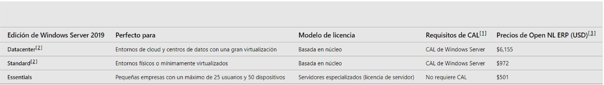

Windows Server¶
Instala la máquina de Windows Server bajada de la plataforma Azure, comprobando antes los requisitos del sistema:
Requisitos del Sistema¶
Podemos ver los requisitos del sistema en: PINCHA AQUÍ (Requisitos del Sistema)
Básicamente los requerimientos mínimos son:
- Procesador 64 bits a 1,4GHz.
- RAM 2GB con entorno de escritorio.
- 32GB de Disco Duro.
Licencias CAL (Client Access Licence)¶
Existen 3 tipos de licencias CAL:
-
CAL de Usuario: Por cada usuario que esté dado de alta en el dominio necesitaremos una licencia.
-
CAL de dispositivo: Por cada dispositivo que registremos en el dominio (impresoras, ordenadores, tablets..) necesitaremos una licencia.
-
CAL RDS (Remote Desktop Services): Son licencias para el acceso mediante escritorio remoto mayormente. El que tengas una licencia que te permita acceder a un servicio remoto de un dispositivo, no te quita de que ese dispositivo también cuente con una licencia CAL.
Las RDS CAL se activan a través del Administrador de licenciamiento (online), en cambio sobre las CAL de usuarios y dispositivos no hay un control, pero sí estás obligado a llevar un registro en caso de una auditoría de software.
Las licencias de dispositivo salen rentable si un mismo ordenador lo van a usar múltiples usuarios, mientras que si cada usuario va a usar un ordenador será más rentable una licencia de usuario.
Example
En mi empresa tengo 40 empleados, pero hacen turnos de día (8horas), tarde (8 horas) y noches (8 horas). Por tanto, los trabajadores no coinciden a la vez en la oficina, se decide usar licencias por dispositivo y que los trabajadores compartan ordenadores (dispositivos).
Example
En mi empresa cada trabajador dispone de un portátil y un ordenador fijo de oficina. Por tanto, como cada usuario tiene 1 o más dispositivos, es más rentable tener licencias por usuario.
Versiones de Windows Server¶

Existen 3 versiones, de más sencillo y barato a más caro, estos son: Essentials, Standard y Datacenter.
-
Essentials: Sólo permite 25 usuarios o 50 dispositivos y no son ampliables. Importante que no es necesario licencias CAL. Por otro lado sólo permite instalar de nuevo el Windows Server en una máquina virtual, por ejemplo para backup.
-
Standard: Es prácticamente idéntico a la versión Datacenter pero con alguna característica más y solo permite 2 máquinas virtuales con dicho Windows Server. Importante que todos los usuarios van por licencias CAL.
-
Datacenter: No tiene limitaciones e incluye todas las características, entre ellas:
-
Software Defined Network: Permite la administración y configuración de equipos de red. Permite también una fácil creación de una red virtual para gestionar un sistema de máquinas virtuales.
- Direct Storage: Permite una fácil gestión de la redundancia y alta disponibilidad (HA) del almacenamiento.
-
Host Guardian (HGS): Permite el uso de un TPM virtual para motivos de seguridad como podría ser la encriptación de los datos de mi servidor.
-
LTSB (Long –Term Servicing Branch): Simplemente son versiones con una garantía de actualizaciones de 10 años, es decir, se comprometen a ir sacando actualizaciones de seguridad y mantener el sistema operativo de esta versión por lo menos 10 años desde su compra.
Azure¶
Azure es la plataforma cloud de Microsoft. Esta plataforma cloud nos ofrece poder crear y gestionar servidores virtuales en dicha plataforma. Podemos gestionar la red virtual entre nuestros servidores virtuales, crear plataformas de desarrollo o integrar aplicaciones, gestionar el almacenamiento y las copias de seguridad, monitorización de los servicios, etc. Todo esto de una forma sencilla con una interfaz de usuario.
Las principales ventajas son:
- No necesitas comprar y mantener ningún “hardware”, todo está en la nube, virtualizado en los equipos de Microsoft (Azure).
- Necesitas menos personal para el mantenimiento, ya que la parte hardware y de instalación física no existen.
- Es más fácil redundar los datos y tener tu sistema disponible para los clientes. Es decir, imagina que no usas Azure y tienes tu servidor en la empresa y hay un corte de suministro eléctrico, los clientes se quedarán sin servicio, por tanto no tienes una alta disponibilidad.
La principal desventaja es que tus datos están en una empresa externa, la cual en principio no puede comercializar con dichos datos, ni siquiera acceder a ellos, no obstante es algo a tener en cuenta.
Hyper-V¶
- Hyper-V es un hipervisor de máquinas virtuales, es decir, permite la creación y gestión de máquinas virtuales. Es un hipervisor de tipo 1 (bare metal), es decir, viene integrado en el propio sistema operativo y por tanto no requiere de instalaciones adicionales.
- Vmware o VirtualBox serían un ejemplo de hipervisor de tipo 2, los cuales deben ser instalados encima del sistema operativo (Windows/MAC/Linux) de la máquina anfitriona.